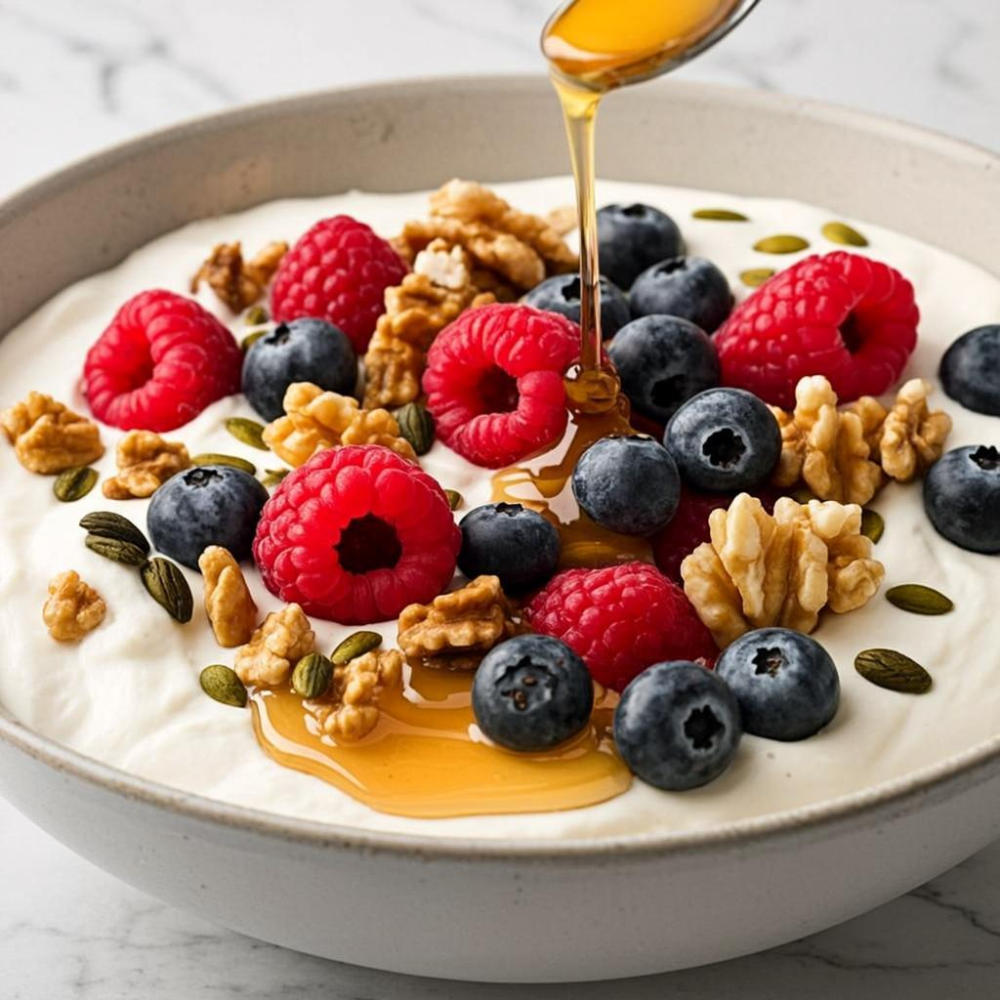
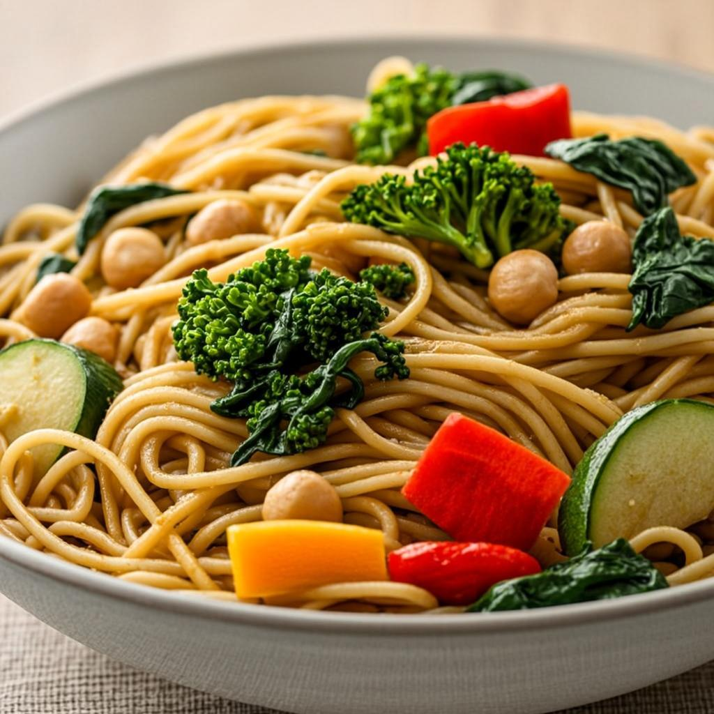
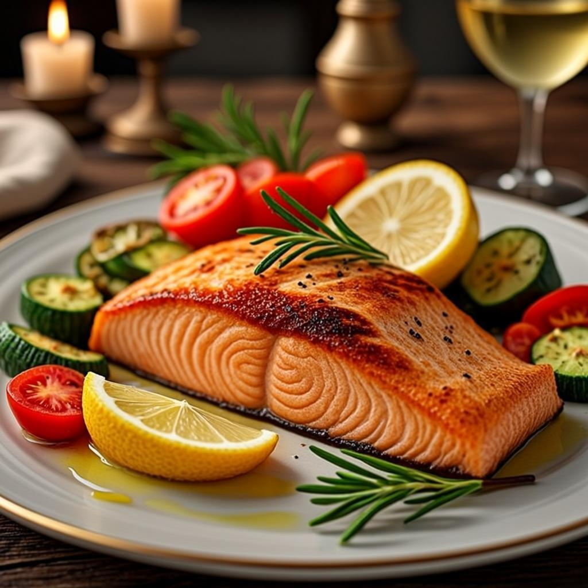

为什么是麦德龙
Why Metro Works油特级初榨橄榄油
自有品牌宜客（AKA）特级初榨橄榄油长期在售，另有意大利、西班牙进口 Ulisse 等品牌可选，价位覆盖入门到大瓶装；西班牙直采线路上还有 Navidul、Queso de Hualdo 等原产橄榄油、橄榄、奶酪。
鱼每周 2-3 次的深海鱼
法罗群岛直采整条冰鲜三文鱼，全程 -4℃ 冷链、卖场独立加工间现切、附麦咨达追溯码，刺身级和煎烤级都有；另外还有挪威/冰岛鲭鱼、黑鳕鱼扒、海鲜冻品一整面墙。
豆豆类罐头与杂粮
鹰嘴豆罐头 425g 即食款常年有货，是做鹰嘴豆泥和沙拉最省事的方案；藜麦、糙米、燕麦、全麦意面在粮油区都能找到。
奶奶酪与酸奶
METRO Chef 全脂牛奶、菲达/马苏里拉等进口奶酪、希腊式酸奶和麦臻选系列都有覆盖，早餐和沙拉都能用。
采购清单
Shopping List · 点一下算备齐一日三餐示范
One Day · 全部用麦德龙食材
希腊酸奶打底，铺蓝莓/树莓、一小把核桃和南瓜子，淋半勺蜂蜜。想更顶饱就加 2 勺即食燕麦。全程 5 分钟，是地中海饮食最经典的打开方式。

全麦螺旋意面煮熟，同锅烫一把菠菜和西兰花；平底锅用橄榄油把彩椒丁、西葫芦丁炒软，倒入沥干的意面、半罐鹰嘴豆罐头翻拌，用盐、黑胡椒、一勺摩德纳香醋调味。豆类+全谷+蔬菜+橄榄油，一份餐盘比例几乎满分。

三文鱼柳用海盐、黑胡椒、柠檬汁腌 10 分钟，橄榄油中火每面煎 2-3 分钟；配菜选西葫芦、彩椒、小番茄，撒盐和迷迭香，200℃ 烤 20 分钟，出锅再淋一勺生橄榄油。主食换糙米饭或半个蒸红薯都行。三文鱼建议当天买当天做，麦德龙是整条现切，新鲜度基本不用担心。
新手避坑
Five Traps特级初榨橄榄油发烟点在 190℃ 左右，用来凉拌、中低温煎烤最合适；要大火爆炒就换成普通精炼橄榄油或山茶油，风味和健康能兼顾。
地中海饮食建议红肉每月不超过 340-450g，也就是一周最多一次牛肉/猪肉，其余时间用鱼、虾、鸡肉、豆制品补蛋白。麦德龙牛排区再诱人也别一周吃三次。
关键看用什么酱和多少蔬菜——奶油培根意面和薄底番茄海鲜意面完全是两回事。意面选全麦、分量控制在一个拳头大小，就还在原则内。
希腊酸奶选无糖原味，果味的含糖量经常爆表；想调味用新鲜蓝莓或一小勺蜂蜜更稳妥。
鹰嘴豆罐头开罐后过一遍清水再入菜，能去掉多余的钠和豆腥味，口感更清爽。
一周节奏
Weekly Rhythm鸡胸
鸡蛋
轮换
第一次去买这五样
Start With Five橄榄油
三文鱼
罐头
酸奶
剩下的食材按兴趣慢慢补。